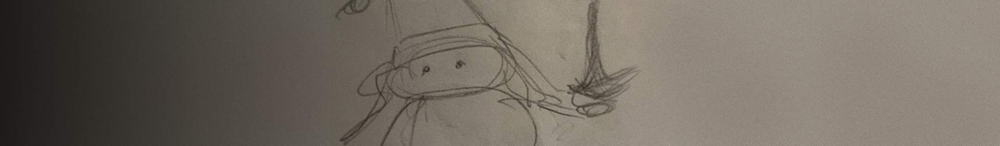

“papercuties” is my indie pop / folk project, that started in 2023.
During these years I've been building a solid fan base and joined many communities around the world (local events, Japanese forums, Discord servers, etc.).
I have been featured in various URL festival events, such as Channel 24/25, Camp Boneyard, sleepy.zone, etc.
I also have been added to some of Spotify's editorial playlists such as “Fresh Finds Dance”, and had the chance to talk directly
via DMs with some of my favorite artists.
I write, sing, produce, and finalize every single track and release it independently, although I have been searching for a record label
recently to help me squeeze out the best of my tracks' potential.
As of July 2026 I have released 10 tracks during these 2 years, and a 5 track tape made of lost demos. I’m currently working on finishing 2 EPs.